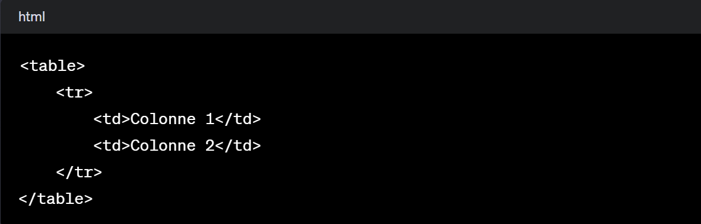

study with me with focus
HTML
introduction
L'histoire d'HTML (HyperText Markup Language) remonte aux débuts d'Internet dans les années 1990. À cette époque, le paysage en ligne était en pleine ébullition, et la nécessité
de partager des informations à travers des réseaux informatiques était devenue évidente. Tim Berners-Lee, chercheur au CERN (Organisation européenne pour la recherche nucléaire),
cherchait un moyen de faciliter la diffusion de documents et de recherches entre scientifiques dispersés géographiquement.
En 1989, Berners-Lee proposa un système de gestion de l'information appelé "World Wide Web". Pour ce faire, il développa le HTML, un langage de balisage permettant de créer
des pages web en structurant le contenu avec des balises décrivant le rôle des différents éléments.
À ses débuts, HTML était rudimentaire et se limitait à des fonctionnalités basiques. Les premières versions consistaient principalement en des balises de base pour les paragraphes,
les titres, les listes et les liens. Cependant, avec la croissance rapide d'Internet et la demande croissante de pages web plus complexes, HTML a rapidement évolué.
Les différentes versions d'HTML ont ajouté de nouvelles fonctionnalités pour répondre aux besoins croissants des développeurs web. HTML 2.0, publié en 1995, a introduit des fonctionnalités
telles que les formulaires. HTML 3.2, sorti en 1997, a ajouté des tables et des applets. Puis, HTML 4.01, publié en 1999, a permis des styles plus avancés et des améliorations au niveau
des formulaires.
L'évolution majeure est survenue avec l'introduction d'HTML5, la version actuelle et la plus évoluée. Lancée en 2014, HTML5 a introduit de nombreuses fonctionnalités novatrices.
Cela inclut la prise en charge native de l'audio et de la vidéo, la géolocalisation, les améliorations pour les applications web, et une sémantique plus riche pour décrire le contenu.
Aujourd'hui, HTML5 est largement adopté et forme la base de la plupart des pages web modernes. Cependant, son évolution continue, portée par le W3C (World Wide Web Consortium) et
d'autres organes de normalisation, vise à répondre aux défis futurs du web, tels que l'Internet des objets, la réalité virtuelle et augmentée, et d'autres technologies émergentes
.
définition
HTML, ou HyperText Markup Language, représente le langage fondamental utilisé pour créer et structurer des pages web. Il s'agit d'un système de balisage qui définit la manière
dont le contenu d'une page web est présenté aux utilisateurs. Les pages HTML sont composées de balises, également appelées "tags", qui encadrent différents éléments tels que
le texte, les images, les liens, les formulaires et autres contenus multimédias.
Fondamentalement, HTML fournit une structure de base pour le contenu en utilisant des balises pour définir et organiser les différentes parties d'une page web. Chaque balise a
une signification spécifique et est utilisée pour présenter un type particulier de contenu. Par exemple, les balises 'p' encadrent les paragraphes, 'h1' à 'h6' sont utilisées
pour les titres, 'img' pour les images, 'a' pour les liens hypertexte, etc.
Les navigateurs web interprètent le code HTML pour afficher les pages web aux utilisateurs. En combinaison avec d'autres technologies comme les feuilles de style en cascade
(CSS) pour la mise en page et la présentation visuelle, ainsi que JavaScript pour l'ajout d'interactivité, HTML forme le trépied du développement web moderne.
Au fil du temps, HTML a évolué pour répondre aux besoins croissants du web, introduisant de nouvelles fonctionnalités et améliorations avec des versions successives. La dernière
itération, HTML5, offre des capacités étendues, notamment la prise en charge native de l'audio et de la vidéo, une meilleure sémantique pour décrire le contenu, des fonctionnalités
pour les applications web et une plus grande accessibilité.
les balises
!vous pouvez essayer ces code pour mieux comprend
- <html>:
- Définit le début et la fin du document HTML.
- <head> :
- Contient les métadonnées du document comme le titre et les liens vers les feuilles de style (CSS) et les scripts.
- <title> :
- Définit le titre de la page qui apparaît dans la barre de titre du navigateur.
- <body> :
- Encadre tout le contenu visible de la page web.
- <h1> à <h6> :
- Balises de titres, de la plus grande (<h1>) à la plus petite (<h6>).
- <p> : Encadre un paragraphe de texte.
- <a> :
- Crée un lien hypertexte vers une autre page ou ressource.
- <img> :
- Insère une image dans la page.
- <ul> :
- Crée une liste non ordonnée.
- < ol> :
- Crée une liste ordonnée.
- <li> :
- Élément de liste pour les balises <ul> et <ol>.
- <table> :
- Définit un tableau.
- <tr> :
- Représente une ligne dans un tableau.
- <th> :
- Définit une cellule d'en-tête dans un tableau.
- <td> :
- Définit une cellule dans un tableau.
- <form> :
- Crée un formulaire pour collecter des données.
- <input> :
- Balise pour différents types de champs de saisie dans un formulaire.
- <textarea> :
- Crée une zone de texte multiligne dans un formulaire.
- <button> :
- Crée un bouton cliquable.
- <div> :
- Divise le contenu en sections ou conteneurs.
- <span> :
- Utilisé pour appliquer du style ou des scripts à une partie spécifique du texte.
- <header>, <footer>,<nav>, <article>, <section> :
- Balises de structure pour organiser le contenu de manière sémantique.
- <video> :
- Intègre une vidéo dans la page web.
- <audio> :
- Intègre un fichier audio dans la page web.
- <canvas> :
- Utilisé pour dessiner des graphiques, des animations ou d'autres visuels avec JavaScript.
- <pre> :
- Affiche du texte préformaté, y compris les espaces, les sauts de ligne et les balises HTML.
- <abbr> :
- Définit une abréviation ou un acronyme.
- <blockquote> :
- Marque une section de texte cité à partir d'une autre source.
- <cite> :
- Définit le titre d'une œuvre citée.
- <hr> :
- Insère une ligne horizontale pour séparer le contenu.
